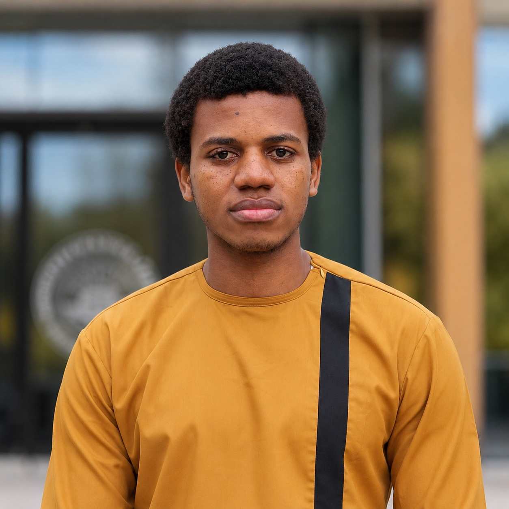

Learning dynamics and LoRA fine-tuning
I study how pre-training shapes downstream adaptation, and why stronger representations can sometimes delay or hurt Low-Rank Adaptation.

PhD student at SISSA, currently visiting Yale. I work on learning dynamics, scaling laws, superposition, LoRA fine-tuning, and teacher-student models.
I use theoretical models and experiments to understand why neural networks learn, specialize, adapt, and scale.
I study how pre-training shapes downstream adaptation, and why stronger representations can sometimes delay or hurt Low-Rank Adaptation.
I am interested in whether scaling laws can emerge from superposition, and how feature geometry changes the observed decay of error.
I use teacher-student settings to isolate mechanisms of specialization, approximation, representation learning, and generalization.
My earlier work connects quantum information, quantum algorithms, and learning theory.
Recent work around learning theory, neural networks, statistical physics, and quantum learning.
From physics and data science to theoretical machine learning.
Visiting PhD student working with Prof. John Sous on superposition, scaling laws, and representations induced by LoRA fine-tuning.
Visiting PhD student working with Prof. Bruno Loureiro on a theory for Low-Rank Adaptation fine-tuning.
PhD in Theoretical and Scientific Data Science. Supervisor: Prof. Jean Barbier.
Postgraduate Diploma in Physics, Quantitative Life Sciences.
Structured Master's Degree in Mathematical Sciences, Data Science.
I am happy to discuss machine learning theory, statistical physics, scaling laws, LoRA fine-tuning, and related questions.